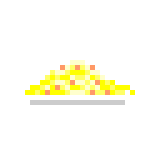

Carbonara pasta

Mangia che te fa bene! Let's make this pasta!
Ingredients
- 2 garlic cloves
- 3 whole eggs
- 1 cup of grated pecorino cheese (parmesan works too)
- 500gr of spaghetti (or fettuccine)
- 300gr of thick cut bacon
- Salt and black pepper to taste
It's very simple to make it, but you need to have it all set cause timing is essencial.
- First step is to heat the bacon. I usually set the pan to low heat and wait a bit before putting the bacon and just let it there slowly heating until our recipe is done;
- Put the pasta on boiling salty water (don't put oil on the water or else every italian will curse you, also because the whole point here is to make the cheese stick to the pasta and the oil wouldn't let that happen). Stir the pasta for 30 seconds after you put it and once again after 5 minutes;
- Mix the eggs and cheese on a bowl, add the salt and pepper and get ready for your moment;
- When the pasta is ready, take most of the water out (leave arround 100ml of it);
- Drop the egg and cheese mix on the pasta and mix it like there is no tomorrow. 1 minute of it should be enough, but you will know;
- add the bacon and serve.
Well, don't eat too much. That's what made me have a beer belly, not actually beer.